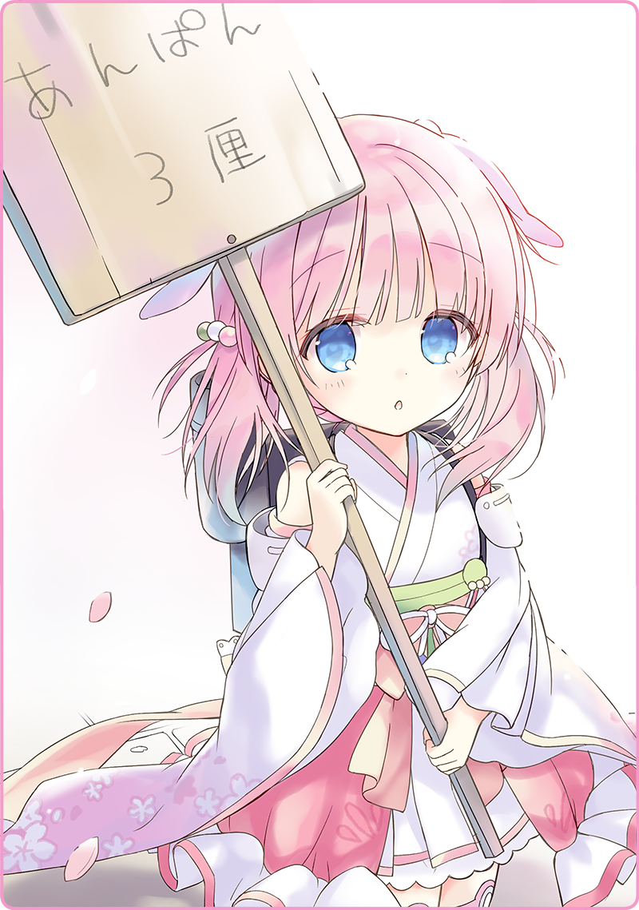

プリマドール・アンコール
01-01 あんぱんと自律人形（１）
人はみんな、泣き声と共に生まれてくる。
それまで母親の胎内でぬくぬくと育って、呼吸も、食事も、あらゆる生命維持活動が不要の天上世界に浸りきっていたのだ。この過酷な現実に産み落とされれば、恨み節のひとつも上げたくなるところだろう。
思えばこの世は不公平だらけ。
使用人を侍らせて放蕩三昧の素封家もいれば、その日暮らしで糊口をしのいでいる貧民もいる。お大尽の家に生まれることを、外国では「銀のさじを咥えて生まれてくる」と表現するのだそうだ。それに比べると、ボクが生まれてきたときの状況はひどく劣悪だ。母は身重を押して大陸まで出稼ぎに行く船旅の途中で産気づいてしまい、暗い船倉の中でボクを生んだのだという。きっと産湯は海水で、生まれたての口にはさぞかししょっぱかったことだろう。ボクは苦汁をなめて生まれてきたのだ。だから狂おしいほどに甘い物が好きなのだと思っている。
風に吹かれて、桜の花びらが舞っている。
皇都はなんとものんきな麗らかさに包まれている。歩いていると汗が滲んでくるほどの陽気で、思わず襟元をはだける。
皇都二区と三区に跨がる威風堂々たる目代橋にさしかかると、真新しい袴に身を包んだ女学生とすれ違った。同い年ぐらいだろうか、きっとこの春から進学した新入生だろう。勉学と教養を学び、友人と語り合い、もしかしたら恋のひとつも知るかもしれない。なんて羨ましいと素直に思った。
ボクはと言えば、国民学校を卒業できたはいいものの、高等学校に進むことは叶わず、家にいても面倒だからと去年から奉公に出されていた。お大尽の豪邸に、住み込みで使用人だ。とはいえ居心地は悪く無かった。元々家事は嫌いではないし、先輩にも可愛がられた。ゆくゆくは独立したいのだとご婦人に相談すると、職業人としての身なりや所作、心構えを事細かに指南してくれた。だからしばらくご厄介になりつつ、お金をせっせと貯めていこうと思っていた。
もっともこの冬に奉公先があっけなく破産してしまったので、その計画も白紙になってしまったけれど。戦後の不況は遅れてやってくると知ったのはその後だ。それも当然だろう。広大な荒野でバカスカ銃弾を撃ちまくり、高価な戦闘人形を惜しげもなく鉄くずに変えていたのだ。そんな浪費がそっくり無くなったのだから、なにもかも立ちゆかない。
しばらくあちこちで日雇いの仕事をこなしてきたが、ここ最近雇い口は少なくなる一方。僅かばかりの退職金も底をつきかけており、懐を探るとなんとたったの３厘。今朝から口に入れたのは湯冷ましだけで、お腹は鳴りっぱなしだ。
そんな時だった。
目の前に手持ち看板が飛び込んできたのは。
【あんぱん ３厘】
我が目を疑うとはこのことだ。菓子ぱんの帝王、東邦文化と西邦文化が出会って生まれた奇跡の逸品あんぱんが３厘！？ 二区の村木屋で買うと１０厘はくだらないだろう。まさに破格。そしてボクのわびしいと言えばあまりにわびしい懐具合でもなんとか手が届く。だからたっと駆けだして、看板を持つ少女の前に立った。
「くださいな！」

少女は小首を傾げてこちらを見た。くすんだ桜色の髪。瑠璃のような青い瞳。幼さを覗かせる、柔らかな頬のライン。白い着物の振り袖が、ひらひらと揺れていた。背中には可憐な印象とは似つかぬ、鈍色の背嚢。小さな煙突が伸びていて、うっすらと水蒸気がたなびいている……。
「……あ、えっと……あの……」
ボクが一瞬固まって、じっと見つめていたので、彼女は気恥ずかしそうに笑った。
「ああ、これはご丁寧にどうも……」
「え？」
くすぐったそうにはにかんでいる。
「いや、そのぅ……」
なんと言ったものか、ちょっと考え込んだ。なんとも噛み合わない会話だが、その理由はもう分かっている。
「キミは人形だよね？」
まさかまた自律人形を見かけることが出来るとは。戦時中ならいざ知らず、平和な皇都で稼働している自律人形はほんの数えるほど。なんとも懐かしくなって、目頭が熱くなった。
そんな感傷もいざ知らず、屈託の無い表情でのぞき込んでくる。
自律人形ってこんなに小さかったっけ、と思った。もちろん、ボクが大きくなっただけなのだけど。
「って、灰桜？」
「あんぱん売って欲しいんだけど」
昔を懐かしむのは一旦止めて、本題に戻る。
「見たところ、売り子をしているんだよね？」
いま初めて見たかのように、手持ち看板を見上げている。
「うん、それをくださいな」
ちゃりんと３厘を渡す。
灰桜の隣には小机があり、大きなバスケットと小さな金庫、それに硝子ケースに入った見本品が並べられている。見本のあんぱんは真ん中でふたつに割られていて、いかにあんがぎっしり詰まっているか誇らしげに誇示している。胡麻の量も申し分ない。
バスケットをのぞき込んでいた灰桜が、素っ頓狂な声を上げる。
「どうしたの？」
「あ、そうなんだ」
確かに改めて覗いてみると、バスケットの中は空っぽだ。
「じゃあ、この見本品をくださいな」
まるっきり売り物がないなら仕方が無いが、目の前には最後の一個がある。
「あれ、もしかして売っちゃダメなやつ？」
「乾いていて、おいしくないとか？」
「もしかして、落としちゃったとか？」
「……自分で食べようと思っていたとか？」
ぴょん、と兎のように跳ねて、ずささと後ずさる。
「いや、まあ……」
言われなくとも察する。
「……ふぅ……」
お腹をさすると、未練のように小さく鳴った。
「いいよ、そういうことなら。無いなら仕方が無いよね」
ぎゅ、と裾を握ってくる。
声を張ろうとしているが、後半に向けてどんどん声量は小さくなっていた。
ぱかりと硝子ケースを開けて、あんぱんを差し出してくれる。
パン種と餡子が混ざり合った、なんともいい匂いが鼻先をくすぐる。
「じゃあ、遠慮無くいただくよ」
ふたつに割れたあんぱんを手に取ると、ほのかにあたたかった。
「あのさ」
「よかったらさ、ふたりで半分こなん」
灰桜は食い入るように言葉を被せてきた。
「はい、どうぞ」
あんぱんの片割れを灰桜に手渡す。
うるうると涙を滲ませんばかりに感動している。
ぽっと、水蒸気が背中の煙突から吹き上げていた。
人はみんな、泣きながら生まれてくる。
では、彼女たち人形はどんな表情で生まれてくるのだろうか？
それはもしかしたら、この世界への希望に満ちた、眩い笑顔なのかもしれない。
執筆：丘野塔也 挿絵：まろやか ＣＶ：和氣あず未（灰桜）
©VISUAL ARTS / Key